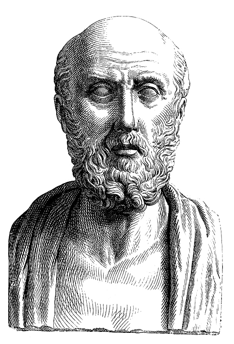
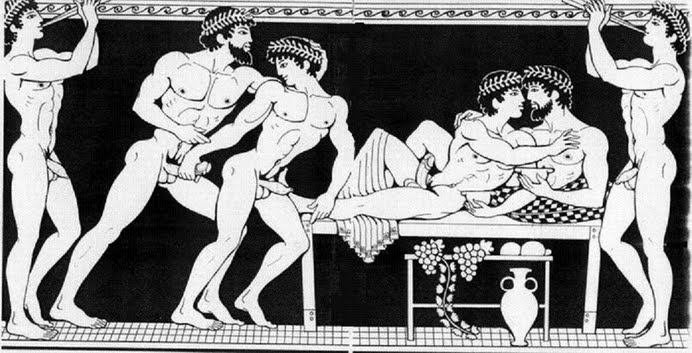
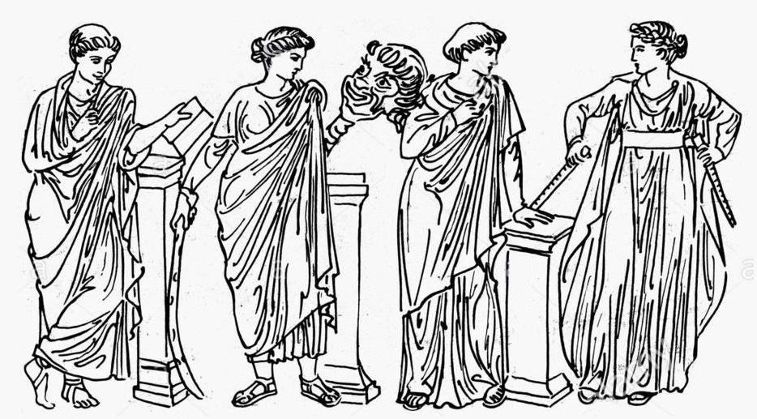
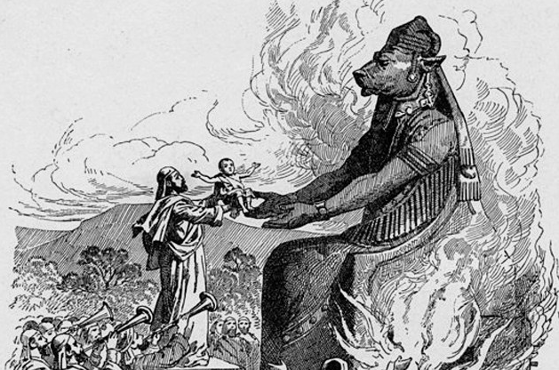

Whom Do You Serve?
Is it Pleasure?
The lure of pleasure is one of our most basic, shared animal instincts. Little pleasures season our dearest moments and comfort us in our darkest. But pleasure is fleeting, fickle, always retreating behind the next craving. To give pleasure to others is a kindness, but people too often seek pleasure in ways that harm them or to the exclusion of more valuable things, or even take pleasure in evil acts.
How can we trust our animal instincts to make us any better than animals?


Is it Art?
Art can dream of high and lofty things. To inspire, to reveal hidden truths, to express what can't be spoken aloud. But art can also be a tool of petty competition, egotism, and exclusion. It can make us tyrannical just as quickly as it can make us gentle. And its influence can be turned to any purpose. What will your art make people think and feel? Will it make them better or worse?
Art may dream of creating a new world, but what kind of world?
Wealth. The demon grinds the human race in its wheels, squeezing blood for the delectation of the Earth's tyrants. The vain scrambling for power, for a fantasy of safety, of escape from one's inevitable end. Do you serve him? Most of us do, in one way or another. As long as capitalism dangles us all above the pit of starvation and misery, the line between drunken greed and the simple will to survive will never be clear to see.
We do what we must to march on, but will you trample others along your way?

Whomever you serve, one thing is common:
There is no master, no motive, no ideal that we can trust to never lead us into evil, except for the love of good itself. Our personal aims must be set below what is most important - moral virtue.
To be happy, to create great art, to have money, these are all worthless if we fail in our obligations to one another. How will we be remembered, and how can we face ourselves, if our legacy is one of harming others in pursuit of our goals? And what are these things even worth to a person who has destroyed their own humanity?
To protect others, and ourselves, we need a set of basic principles to guide us. While we all have different aims in our work, our first and common aim must be to not harm others. And it's this aim that we must bind ourselves to the most firmly.
So, we must have an oath of harmlessness. As doctors swear the oath of Hippocrates, I propose an oath for game developers. It will set only basic rules - it won't tell us what to make, but what not to make. And while it can't prevent all mistakes, it will force us to work with care and attention.
The Oath
I call on all that is sacred1 to serve as witness in the oath I hereby swear, that I will remain holy and pure in my life and in my art, and will practice compassion and a view to right action as an integral part of my work.
I swear that I will never knowingly permit my works to do harm to those who play. My work shall leave none in body or spirit than they were before playing. I will not seek to engender compulsive behavior, even in those who enter it without complaint, nor cause anyone to spend time or money by dishonest means.
I swear this oath for the welfare of all, not only those who play. Thus I must attend to harm created upon all people, whether directly or indirectly, by my work. With this in mind, I will never use my art in such a way as to make those who play any more cruel, careless, ignorant, or otherwise harmful to those around them2.
I swear to honor the trust of those who allow my works to enter their devices or accounts, and make no use of these that has not been knowingly permitted. I will deliver nothing that is not necessary to my work3, and any knowledge I gain from this trust I will never divulge, but keep as holy secret.
I swear to honor those who instructed me in my art, and hold them as equal to siblings, and in turn I will teach it to all those wishing to learn whom I am able to instruct, providing that they too shall swear this oath4.
If I should faithfully fulfill this oath in all my work, then let me be renowned in life and in death by all as a skilled and noble artisan. However if I should fail, let me be scorned as a traitor to my craft and as a wicked and faithless wretch.
Appendix
1: Reword this clause as necessary to swear this oath by whatever you consider most sacred. If you have one god, it should probably be that. If you have several, choose a few most relevant to your work. If you have an artistic focus, art, beauty, or truth may fit, whereas if you focus more on fun or competition you may find sport, victory, or revelry more suitable themes, or you could emphasize your role as a creator by choosing craftworks or childbirth. It's up to you! If you have no gods, abstract principles like Good, Pure Art, Love, or Humanity are great, or you could go with classics like "my life", "my honor", or "my mother's grave".
2: Don't just think about making people cruel in the abstract, but consider specific forms of cruelty that exist around you. Does your game uncritically use racist stereotypes? Does it justify imperialist war? Contributing to existing injustice must be avoided.
3:
If a country is governed with tolerance,
the people are comfortable and honest.
If a country is governed with repression,
the people are depressed and crafty
When the will to power is in charge,
the higher the ideals, the lower the results
try to make people happy
and you lay the groundwork for misery
try to make people moral
and you lay the groundwork for vice.
Thus the Master is content
to serve as an example
and not impose her will
She is pointed, but doesn't pierce
Straightforward, but supple
Radiant, but easy on the eyes
- Tao Te Ching, chapter 58
trans. Stephen Mitchell
4: This
share-alike requirement is intended to ensure the spread of this oath to increase the scope of its benefit.
{kind=link}